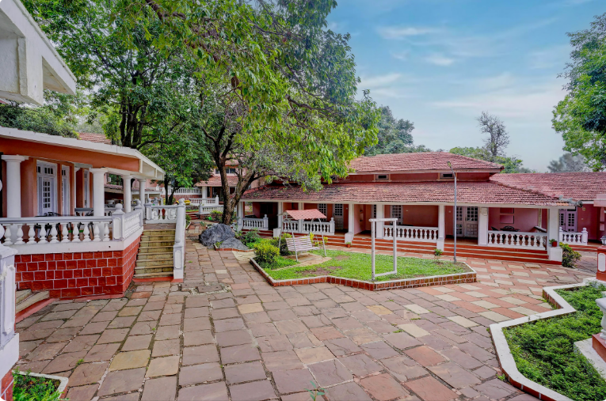
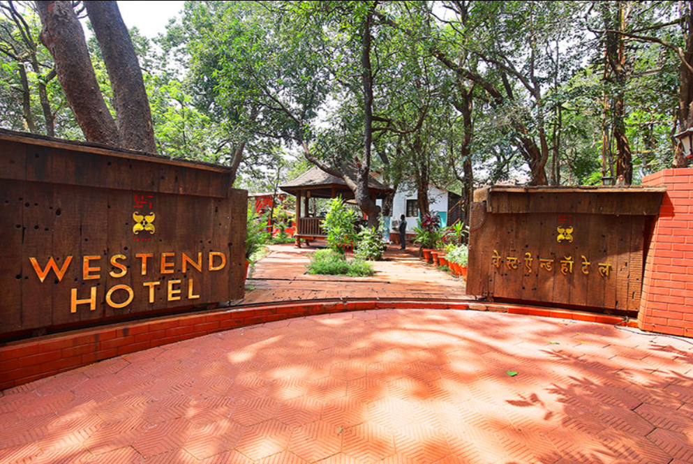
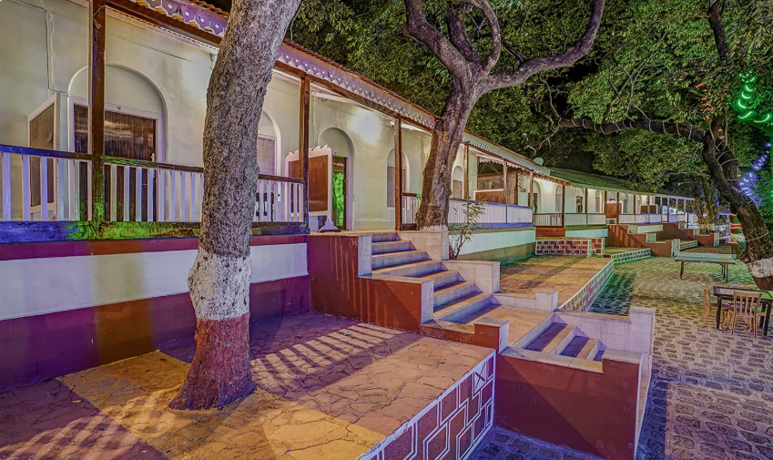
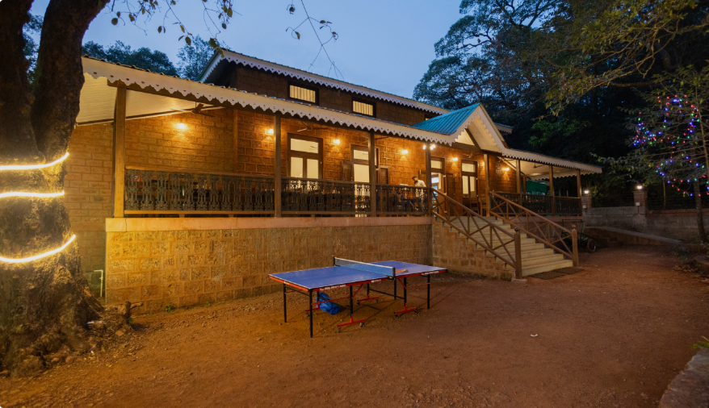
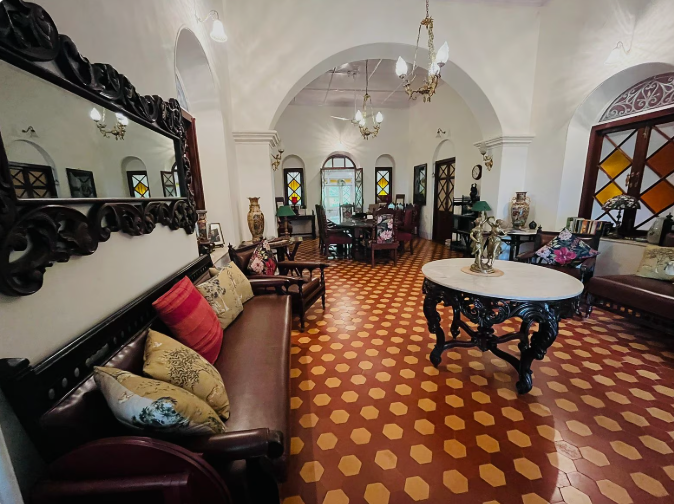
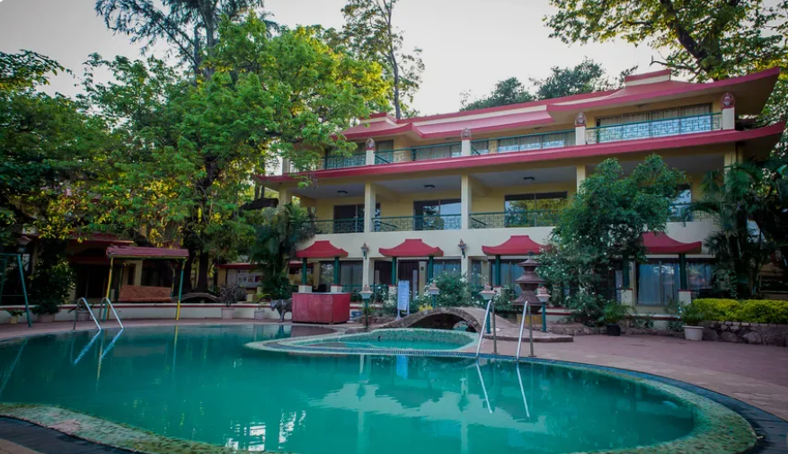

The Byke Heritage Resort - Matheran features a garden, terrace, a restaurant and bar in Matheran. Featuring a 24-hour front desk, this property also provides guests with a water park

Westend Hotel is located in Matheran. With an outdoor swimming pool, the 3-star hotel has air-conditioned rooms with free WiFi, each with a private bathroom.

Treebo Cecil Resort, 600 Mtrs From Matheran Railway Station is located in Matheran.

Situated in Matheran, Scarlet Resort has an outdoor swimming pool, garden, restaurant, and free WiFi throughout the property.

SaffronStays Parsi Manor - 4-BR heritage villa near Charlotte Lake serving authentic Parsi meals is set in Matheran. Free WiFi, a concierge service and a housekeeping service are offered.

Adamo The Village features accommodation in Matheran. Featuring an outdoor swimming pool, the 3-star resort has air-conditioned rooms with a private bathroom.